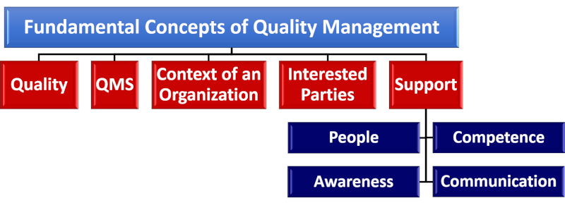

Concepts of the Quality Management System


Welcome to the 4Z-Pedia. Quality Management System (QMS) helps to raise the level of quality in providing services and products to any organization, whatever the type, size or activity. Because of the importance of the QMS, let's quickly get familiar with the most important concepts of the QMS. so that we understand its basic components.
Welcome to the 4Z-Pedia. Quality Management System (QMS) helps to raise the level of quality in providing services and products to any organization, whatever the type, size or activity. Because of the importance of the QMS, let's quickly get familiar with the most important concepts of the QMS. so that we understand its basic components.
Quality:
- An organization focused on Quality promotes a culture that results in behavior, attitudes, activities and processes that deliver value through fulfilling the needs and expectations of the customers and other relevant interested parties.
- Quality of an organization’s products and services is mainly determined by the ability to satisfy its customers and the intended and unintended impact on relevant interested parties.
- Quality of products and services includes not only their intended function and performance, but also their perceived value and benefit to the customer.
Quality Management System:
- A Quality Management System (QMS) comprises activities by which the organization identifies its objectives and determines processes and resources required to achieve desired results.
- QMS manages interacting processes and resources required to provide value and realize results for relevant interested parties.
- QMS enables top management to optimize the use of resources considering long- and short-term consequences of their decision.
- A QMS provides means to identify actions to address intended and unintended consequences in providing products and services.
Context of an Organization:
- Understanding context of the Organization is a process. This process determines factors which influence Organization’s purpose, objectives and sustainability. It considers internal factors such as values, culture, knowledge and performance of the Organization. It also considers external factors such as legal, technological, competitive, market, cultural, social and economic environments.
- Examples of the ways in which an Organization’s purpose can be expressed include its: vision, mission, policies and objectives.
Interested Parties:
- Concept of Interested Parties extends beyond a focus solely on the customer. It is important to consider all relevant Interested Parties.
- Part of the process for understanding context of the organization is to identify its Interested Parties.
- Relevant Interested Parties are those that provide significant risk to organizational sustainability if their needs and expectations are not met. Organizations define what results are necessary to deliver to those relevant Interested Parties to reduce that risk.
- Organizations attract, capture and retain the support of relevant Interested Parties they depend upon for their success.
Support:
1. People:
- People are essential resources within the organization. Performance of the organization is dependent upon how People behave within the system in which they work.
- Within an organization, People become engaged and aligned through a common understanding of the quality policy and the organization’s desired results.
2. Competence:
- A QMS is most effective when all employees are Competent and apply skills, training, education and experience needed to perform their roles and responsibilities.
- It is the responsibility of top management to provide opportunities for people to develop these necessary Competencies.
3. Awareness:
- Awareness is attained when people understand their responsibilities and how their actions contribute to the achievement of the organization’s objectives.
4. Communication:
- Planned and effective internal (i.e., throughout the organization) and external (i.e., with relevant interested parties) Communication enhances people’s engagement and increased understanding of:
- Context of the organization;
- Needs and expectations of customers and other relevant interested parties;
- Quality Management System.
Now after this short description about the general concepts of the quality management system, if you have any question about this topic, or if you have decided to launch your own quality management system,
email us today at: support@the4z.com. We will be pleased to answer all your questions about quality, and even more if we can support you building your most effective and affordable QMS.
Call 4Z for Quality today at (also on WhatsApp):
+973 3399 5807 or +90 5050 3040 16.